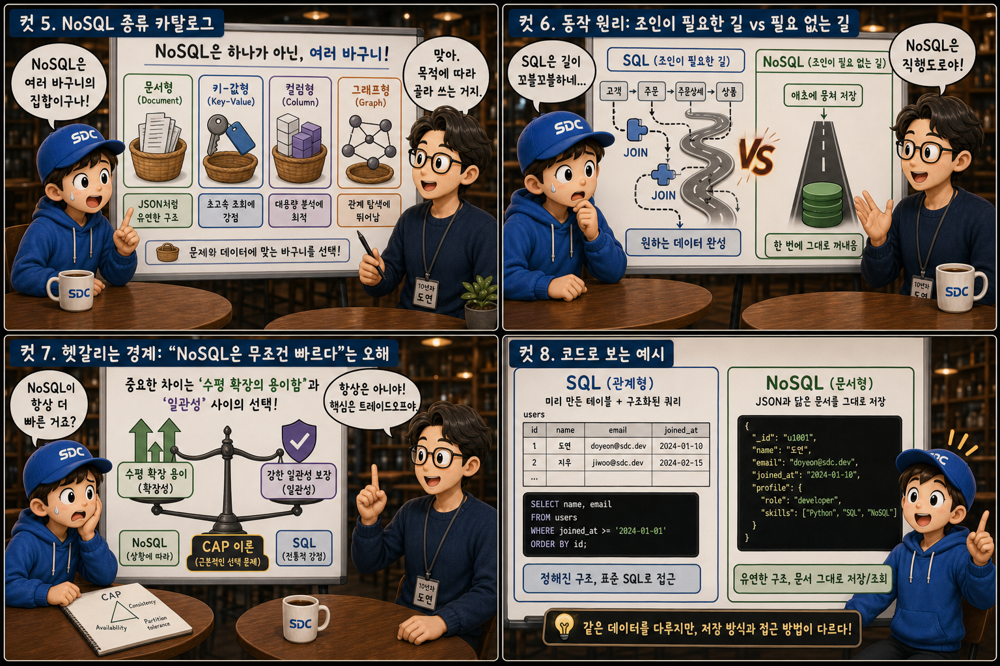
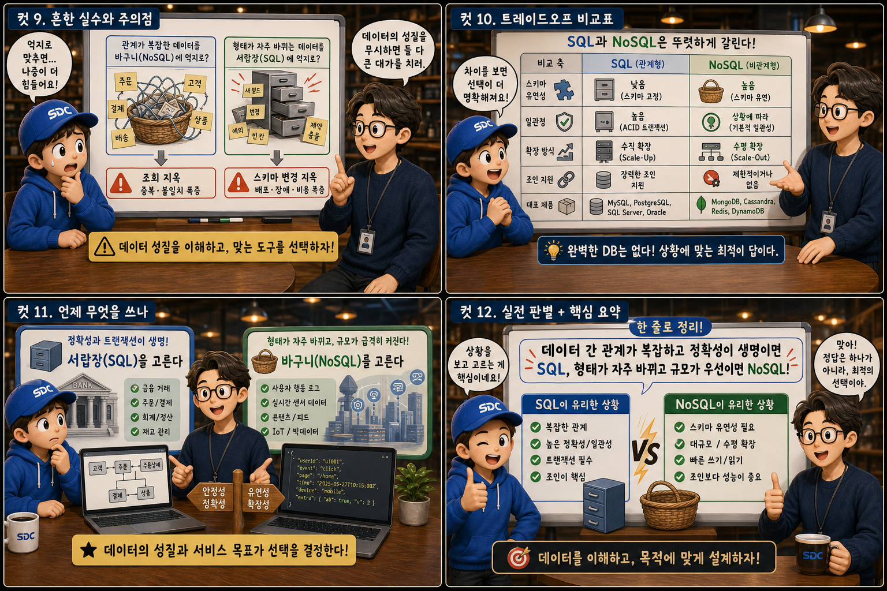

정돈된 ‘서랍장’과 자유로운 ‘바구니’에 비유해 두 데이터베이스의 차이를 12컷으로 풀어봅니다.
SQLvsNoSQL
데이터베이스를 고른다는 것은 결국 “내 데이터를 어떤 그릇에 담을 것인가”를 정하는 일입니다. 정확히 같은 크기의 칸이 격자로 반복되고 칸마다 라벨이 붙은 반듯한 서랍장이 있고, 크기도 모양도 제각각인 물건을 그때그때 담아내는 자유로운 바구니가 있습니다. SQL과 NoSQL은 결국 같은 문제 — 데이터를 어떻게 저장하고 꺼낼 것인가 — 에 대한 서로 다른 답입니다. 이 글에서는 그 차이를 열두 장면으로 하나씩 살펴봅니다.
PART 1 / 3 — 두 그릇의 발견 (컷 01–04)
fourcut-01 — 컷 01 ~ 04
컷 01
데이터를 어떤 그릇에 담을 것인가
데이터베이스를 고른다는 것은 결국 “내 데이터를 어떤 그릇에 담을 것인가”를 정하는 일이다.
화면 왼쪽에는 정확히 같은 크기의 정사각 칸이 격자로 반복되고 칸마다 작은 라벨 스티커가 붙은 남색 서랍장이, 오른쪽에는 둥근 것, 각진 것, 길쭉한 것이 자유롭게 쌓인 에메랄드색 바구니 더미가 놓여 있습니다. 그 사이에 떠 있는 커다란 물음표 하나 — “데이터를 어떤 그릇에 담을 것인가?” SQL은 정해진 칸에 데이터를 가지런히 넣는 서랍장에 가깝고, NoSQL은 담을 물건의 모양에 맞춰 그릇을 바꾸는 바구니에 가깝습니다. 이 그림책은 그 차이를 열두 장면으로 풀어봅니다.
컷 02
정의부터: 반듯한 표와 유연한 그릇
SQL은 미리 정해진 스키마를 따르는 관계형 데이터베이스이고, NoSQL은 스키마가 유연한 비관계형 데이터베이스의 통칭이다.
SQL 데이터베이스는 테이블의 구조 — 컬럼과 자료형 — 를 미리 정의한 뒤 그 틀에 맞춰 데이터를 저장하는 관계형 데이터베이스(RDB)입니다. 칸 크기와 칸 이름이 치수선으로 미리 그려진 서랍장 설계도처럼, 무엇이 어디에 들어갈지가 사전에 결정됩니다. 반면 NoSQL은 문서, 키-값, 컬럼, 그래프 등 다양한 형태로 데이터를 저장하며 스키마를 미리 강제하지 않는 비관계형 데이터베이스를 통칭하는 이름입니다. 즉 SQL은 하나의 정형화된 방식이고, NoSQL은 그 틀을 벗어난 여러 방식의 집합입니다. schema-first / schema-flexible
컷 03
나란히 비교: 테이블 vs 문서
SQL은 데이터를 행과 열로 이루어진 테이블에 저장하고, NoSQL은 자기 완결적인 문서 덩어리로 저장한다.
SQL에서는 데이터를 테이블이라는 격자 안에, 행 하나가 레코드 하나가 되도록 저장합니다. 사용자 테이블의 한 행에는 id, name, email이 각각의 열에 나뉘어 정확히 칸에 맞춰 들어갑니다. NoSQL의 문서형 데이터베이스에서는 이름과 이메일뿐 아니라 그 사람의 주문 목록까지 { name, email, orders: [...] }처럼 하나의 문서 안에 중첩해서 통째로 저장할 수 있습니다. 데이터를 잘게 쪼개 나눠 담을지, 관련된 것을 한 덩어리로 뭉쳐 담을지의 차이입니다.
컷 04
관계를 다루는 두 가지 방식
관계형 DB는 데이터 간의 관계를 테이블 조인으로 표현하고, NoSQL은 애초에 관계를 문서 안에 품어 저장한다.
SQL — RELATIONAL
관계를 테이블 조인으로 표현한다
NOSQL — NON-RELATIONAL
관계를 문서 안에 품어 저장한다
definition
관계형 데이터베이스는 데이터를 잘게 나눠 저장한 뒤 필요할 때 JOIN이라는 연산으로 여러 테이블을 이어 붙여 관계를 표현합니다. 반면 문서형 NoSQL은 서로 관련된 데이터를 처음부터 하나의 문서 안에 중첩시켜 저장하므로, 읽을 때 별도의 연결 작업 없이 통째로 꺼내올 수 있습니다. 데이터를 정규화해서 나눠 담을지, 비정규화해서 뭉쳐 담을지에 대한 근본적인 설계 철학의 차이입니다.
PART 2 / 3 — 종류와 동작 원리 (컷 05–08)

fourcut-02 — 컷 05 ~ 08
컷 05
NoSQL 종류 카탈로그: 네 가지 얼굴
NoSQL은 하나의 방식이 아니라 문서형, 키-값형, 컬럼형, 그래프형처럼 목적에 따라 나뉜 여러 바구니의 집합이다.
NoSQL은 단일한 기술이 아니라 목적에 따라 갈라진 여러 갈래의 통칭입니다. 문서형(Document — MongoDB)은 중첩된 객체를 그대로 저장하고, 키-값형(Key-Value — Redis)은 열쇠 하나로 값 하나를 즉시 꺼내는 초고속 캐시 조회에 특화되어 있습니다. 컬럼형(Column — Cassandra)은 방대한 쓰기 트래픽을 여러 서버에 분산 저장하는 데 강하고, 그래프형(Graph — Neo4j)은 사람과 사람의 관계처럼 연결 자체가 중요한 데이터를 탐색하는 데 특화되어 있습니다. 네 바구니는 모두 에메랄드색이지만, 무늬가 다르듯 쓰임새가 다릅니다.
컷 06
동작 원리: 조인이 필요한 길과 필요 없는 길
SQL은 흩어진 테이블을 JOIN으로 이어 붙여야 원하는 데이터를 완성하고, NoSQL은 애초에 뭉쳐 저장했기 때문에 한 번에 그대로 꺼내온다.
사용자 테이블+주문 테이블+상품 테이블→JOIN 연산→결과표 완성
문서 하나 { 사용자 + 주문 + 상품 }→바로 꺼낸다
SQL 데이터베이스에서 사용자, 주문, 상품처럼 서로 다른 테이블에 나뉜 정보를 한 번에 조회하려면 JOIN 연산으로 테이블을 이어 붙여야 합니다. 위쪽 길이 복잡한 배관도라면, 아래쪽 길은 단순한 직선 도로입니다. 문서형 NoSQL에서는 애초에 사용자 문서 안에 주문 내역까지 함께 저장해두었다면 문서 하나만 조회해도 필요한 정보가 모두 따라옵니다. 다만 이 뭉쳐 저장하는 방식은 같은 정보가 여러 문서에 중복될 수 있다는 대가를 치릅니다.
컷 07
헷갈리는 경계: “NoSQL은 무조건 빠르다”는 오해
NoSQL이 항상 더 빠른 것은 아니다. 실제 차이는 수평 확장과 일관성 사이의 트레이드오프이며, CAP 이론이 설명하는 선택의 문제다.
“NoSQL = 무조건 빠름”이라는 문구 위에는 커다란 금지 기호가 그려져야 합니다. NoSQL의 진짜 강점은 여러 서버로 데이터를 쪼개 나눠 담는 수평 확장(샤딩)이 상대적으로 쉽다는 점에 있습니다. CAP 이론은 분산 시스템이 일관성, 가용성, 분할 내성이라는 세 꼭짓점을 동시에 완벽히 만족할 수 없다고 말합니다. SQL이 튼튼한 기둥 위에 고정된 서랍장처럼 강한 일관성에 무게를 둔다면, 많은 NoSQL은 여러 트럭에 바구니를 나눠 싣고 퍼져나가듯 확장성과 가용성을 위해 강한 일관성을 일부 양보하는 선택을 하며 — 그 사이 잠깐 어긋난 바구니 하나처럼 일시적으로 다른 값이 보일 수 있습니다 — 이것이 속도의 원천처럼 보이는 것뿐입니다. the trade-off, not the speed
컷 08
코드로 보는 예시: 같은 목적, 다른 문법
SQL은 미리 만든 테이블에 구조화된 쿼리 문장으로 접근하고, NoSQL(문서형)은 JSON과 닮은 구조를 그대로 저장하고 꺼낸다.
SQL — 서랍장을 먼저 짜고 꺼낸다
-- 칸의 이름과 자료형을 먼저 선언CREATE TABLE users (id INT, name TEXT, email TEXT);
-- 구조화된 질의어로 원하는 행을 조회SELECT name FROM users WHERE id = 1;
NoSQL(MongoDB) — 바구니에 그대로 담고 꺼낸다
// 선언 없이 문서를 그대로 저장
{ "id": 1, "name": "Song", "orders": ["A101", "A102"] }
// 필요한 문서를 통째로 조회
db.users.findOne({ id: 1 })
SQL에서는 CREATE TABLE로 미리 열의 이름과 자료형을 선언한 뒤 SELECT, WHERE 같은 구조화된 질의어로 원하는 행을 꺼냅니다. 문서형 NoSQL인 MongoDB에서는 테이블 선언 없이 바로 JSON과 비슷한 형태의 문서를 저장하고, findOne 같은 함수로 필요한 문서를 통째로 찾아옵니다. 문법은 다르지만 두 코드 모두 결국 원하는 데이터 한 조각을 정확히 짚어내는 것이 목표입니다.
PART 3 / 3 — 실전 감각과 요약 (컷 09–12)

fourcut-03 — 컷 09 ~ 12
컷 09
흔한 실수: 그릇을 잘못 고르면 생기는 일
관계가 복잡한 데이터를 억지로 바구니에 우겨넣거나, 형태가 자주 바뀌는 데이터를 억지로 서랍칸에 고정하면 둘 다 큰 대가를 치른다.
⚠ 복잡한 관계를 NoSQL에 우겨넣으면
은행 거래처럼 여러 개체 간의 관계가 촘촘하고 정확한 계산이 필요한 데이터를 문서형 NoSQL에 무리하게 밀어 넣으면, 얽힌 실타래를 바구니에 쑤셔 넣듯 같은 정보가 여러 문서에 중복되고 그 중복을 일관되게 유지하는 일이 오히려 더 어려워집니다.
⚠ 자주 바뀌는 데이터를 SQL에 고정하면
사용자 프로필처럼 항목이 사람마다 다르고 자주 바뀌는 데이터를 SQL 테이블에 고정하면, 어제는 네모였다가 오늘은 별 모양이 된 물건을 같은 서랍칸에 끼워 넣으려는 것처럼 컬럼을 추가하거나 빼는 스키마 변경 작업이 반복적으로 발생합니다.
✓ 설계는 데이터의 성격을 먼저 이해하는 데서 시작한다
데이터의 성격을 먼저 파악하지 않고 그릇부터 고르는 것이 가장 흔한 실수입니다. 그릇은 내용물에 맞춰 골라야 합니다.
두 그림 사이에 놓인 작은 저울이 말해주듯, 어느 한쪽이 틀린 것이 아니라 내용물과 그릇의 궁합이 어긋난 것이 문제입니다.
컷 10
트레이드오프 비교표: 다섯 축으로 보기
스키마 유연성, 일관성, 확장 방식, 조인 지원, 대표 제품이라는 다섯 축에서 SQL과 NoSQL은 뚜렷하게 갈린다.
정답은 없다, 우선순위가 다를 뿐
비교 축
SQL (서랍장)
NoSQL (바구니)
스키마 유연성
고정 (잠긴 자물쇠)
유연 (열린 자물쇠)
일관성 (ACID)
강하게 보장 (균형 잡힌 저울)
일부 양보 가능 (살짝 기운 저울)
확장 방식
수직 확장 (위로 쌓기)
수평 확장 (옆으로 퍼지기)
조인 지원
기본 기능으로 지원
애초에 뭉쳐 저장해 불필요하게 설계
대표 제품
MySQL, PostgreSQL
MongoDB, Redis, Cassandra
SQL은 스키마가 고정적인 대신 트랜잭션의 일관성(ACID)을 강하게 보장하고, 여러 서버로 나누기보다 한 대의 서버 성능을 높이는 수직 확장에 익숙합니다. NoSQL은 스키마가 유연하고 여러 서버에 데이터를 나눠 담는 수평 확장에 강하지만, 그 대가로 즉각적인 강한 일관성을 다소 양보하는 경우가 많습니다. 조인 역시 SQL은 기본 기능으로 지원하지만, NoSQL은 애초에 조인이 필요 없도록 데이터를 미리 뭉쳐 설계하는 쪽을 택합니다.
컷 11
언제 무엇을 쓰나: 갈림길 표지판
정확성과 트랜잭션이 생명인 데이터에는 서랍장(SQL)을, 형태가 자주 바뀌고 규모가 급격히 커지는 데이터에는 바구니(NoSQL)를 고른다.
🏦 정확성이 생명이라면 → SQL로 가는 길
결제 · 잔액 · 계좌 이체 데이터
여러 테이블 간 정합성이 중요한 경우
트랜잭션을 엄격히 보장해야 하는 경우
📈 규모와 유연성이 우선이라면 → NoSQL로 가는 길
게시글 · 채팅 로그 · 사용자 활동 기록
항목의 형태가 자주 바뀌는 경우
데이터 양이 폭발적으로 늘어나는 경우
계좌 잔액이나 결제처럼 숫자 하나라도 틀리면 안 되고 여러 테이블 간의 정합성이 중요한 데이터는 트랜잭션을 엄격히 보장하는 SQL이 유리합니다. 반면 게시글이나 채팅 로그, 사용자 행동 기록처럼 항목의 형태가 자주 바뀌고 데이터 양이 폭발적으로 늘어나는 경우에는 스키마 변경 부담이 적고 수평 확장이 쉬운 NoSQL이 더 잘 맞습니다. 갈림길 표지판 기둥에 새겨진 문구처럼, 결국 선택의 기준은 “우선순위가 정확성인가, 확장성인가?”입니다.
컷 12
마지막 판별법: 서랍장과 바구니가 마주 볼 때
관계가 복잡하고 정확성이 생명이면 SQL, 형태가 자주 바뀌고 규모가 우선이면 NoSQL이다.
마지막 장면에서 서랍장과 바구니는 나란히 서서 서로를 마주 봅니다. 서랍장의 남색 말풍선은 “관계가 복잡하고 정확성이 생명이면 나를”, 바구니의 에메랄드 말풍선은 “형태가 자주 바뀌고 규모가 우선이면 나를”이라고 말합니다. 두 방식 중 어느 것이 절대적으로 우월한 것이 아니라, 담으려는 데이터의 성격에 맞는 그릇을 고르는 것이 데이터베이스 설계의 출발점입니다.
스키마: 고정 vs 유연일관성: 강함 vs 조정 가능확장: 수직 vs 수평조인: 지원 vs 불필요대표: MySQL vs MongoDB선택: 정확성 vs 확장성
같은 문제, 두 개의 그릇
SQL은 정해진 칸에 데이터를 가지런히 담아 관계와 일관성을 지키고, NoSQL은 내용물의 모양에 맞춰 그릇을 바꾸며 유연함과 확장성을 얻습니다. 반듯한 서랍장과 자유로운 바구니처럼, 정답은 없습니다 — 담으려는 데이터의 성격에 맞는 그릇을 고르는 것이 설계의 출발점입니다.